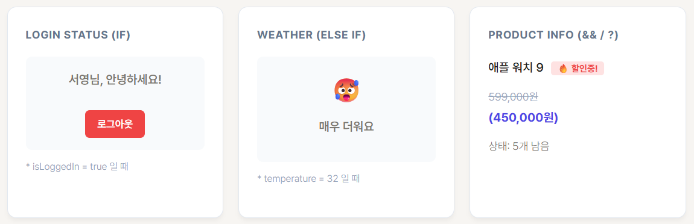
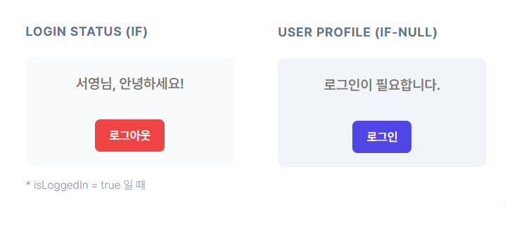
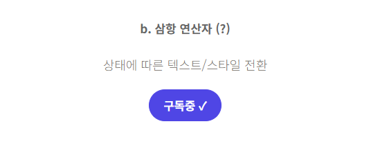
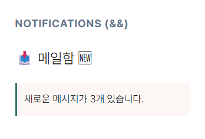
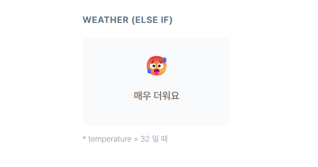
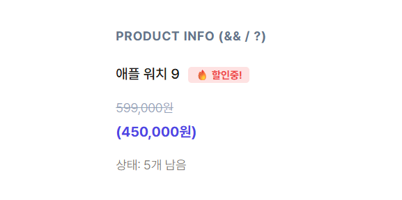
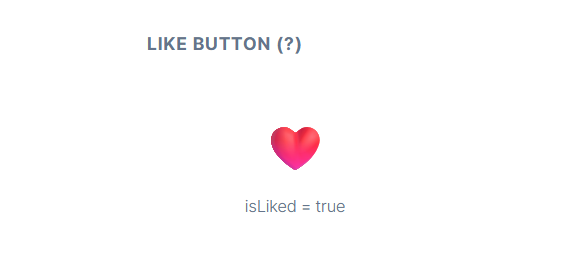

01
조건부 렌더링의 개념

조건부 렌더링은 JavaScript의 조건 처리 로직을 사용하여 애플리케이션의 상태에 부합하는 요소만을 선택적으로 화면에 그리는 방식입니다.
주요 사용 예시:
- 사용자 로그인 여부에 따른 '로그인/로그아웃' 버튼 전환
- 데이터 로딩 상태에 따른 스피너(Spinner) 또는 스켈레톤 UI 표시
- 권한에 따른 특정 메뉴 활성화 또는 비활성화
02
주요 구현 방법
a. if 문을 활용한 렌더링

함수 내부에서 return 문이 실행되기 전에 사용합니다.
컴포넌트 전체 구조를 변경하거나 특정 조건에서 렌더링을 완전히
차단(null 반환)할 때 적합합니다.
function LoginStatus({ isLoggedIn, username = "사용자" }) { if (isLoggedIn) { return ( <div> <p>{username}님, 안녕하세요!</p> <button>로그아웃</button> </div> ); } return ( <div> <p>로그인이 필요합니다.</p> <button>로그인</button> </div> ); }
b. 삼항 연산자 (Ternary Operator)

JSX 내부에서 인라인으로 조건을 처리할 때 가장 자주 사용되는
방식입니다.
조건 ? 참일_때_결과 : 거짓일_때_결과 형식을 따릅니다.
function SubscribeButton({ isSubscribed }) { return ( <button> {isSubscribed ? "구독중 ✓" : "구독하기"} </button> ); }
- 텍스트 변경: 상태에 따라 버튼이나 라벨의 문구를 즉각적으로 교체합니다.
-
스타일 변경:
className={isDark ? 'dark-mode' : 'light-mode'}와 같이 동적 스타일링에 유용합니다.
c. 논리 연산자 (&&)

조건이 참일 때만 요소를 출력하고, 거짓일 때는 아무것도 렌더링하지 않을 때 효율적입니다.
function NewMail({ newMailCount }) { return ( <> <h3>메일함 {newMailCount > 0 && "🆕"}</h3> {newMailCount > 0 && ( <div>새로운 메시지가 {newMailCount}개 있습니다.</div> )} </> ); }
03
실습 과제 및 구현 예시
a. 날씨 안내 컴포넌트

if...else if문을 활용하여 온도별 메시지를 할당합니다.
function Weather({ temperature }) { let message; if (temperature >= 30) message = "🥵 매우 더워요"; else if (temperature >= 20) message = "😊 적당해요"; else message = "🥶 매우 추워요"; return <div>{message}</div>; }
b. 쇼핑몰 재고 표시

삼항 연산자와 논리 연산자를 혼합하여 상태를 출력합니다.
<p>상태: {product.stock === 0 ? "❌ 품절" : `${product.stock}개 남음`}</p> {product.onSale && <span>🔥 할인중!</span>}
{discount ? ( <> <span style={{ textDecoration: "line-through" }}>{price}원</span> <span> ({discount}원)</span> </> ) : ( <span>{price}원</span> )}
c. 좋아요 버튼

function Like({ isLiked }) { return <button>{isLiked ? '❤️' : '🤍'}</button>; }
Comments